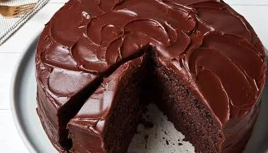

DescriptionA soft, moist and rich chocolate cake that's simple to make and perfect for birthday, celebrations, or a sweet treat at home.
Preheat the oven to 1800C (35900). Grease a cake pan and lightly dust it with flour.
In a large bowl, combine flour, cocoa powder, sugar, baking powder, baking soda and salt.
Add the eggs, vegetable oil, vanilla extract and milk. Mix until the batter is smooth.
Slowly add the hot water while mixing. The better will become relatively thin-this is normal and helps make the cake moist.
Pour the batter into the prepared cake pan. Bake for approximately 30-35 minutes.
Insert a toothpick into the center. If it comes out clean or wtih a few moist crumbs, the cake is ready.
Allow the cake to cool in the pan for about 10 minutes, then transfer it to a wire rack and let it cool completely.
Add chocolate frosting, chocolate shavings, or powdered sugar if desired. Slice and serve.